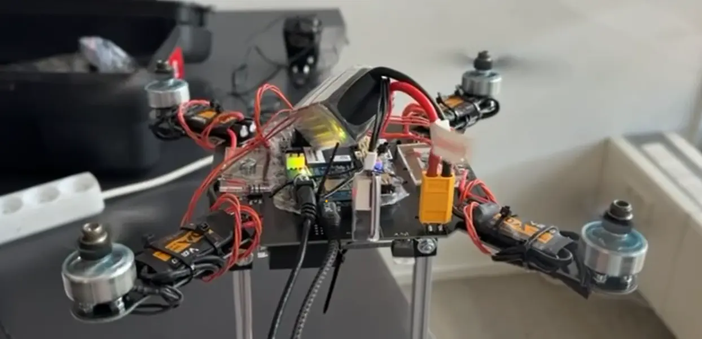
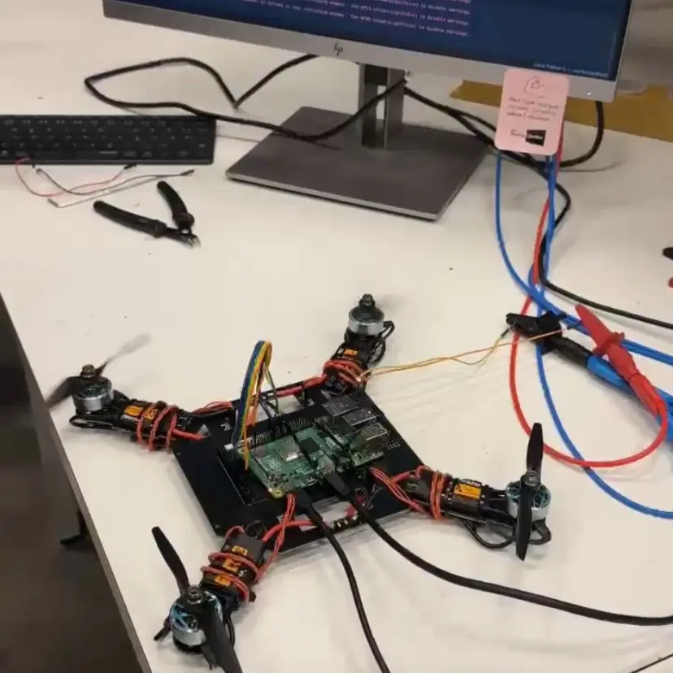
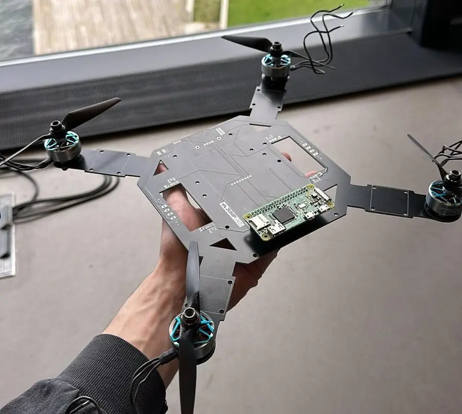
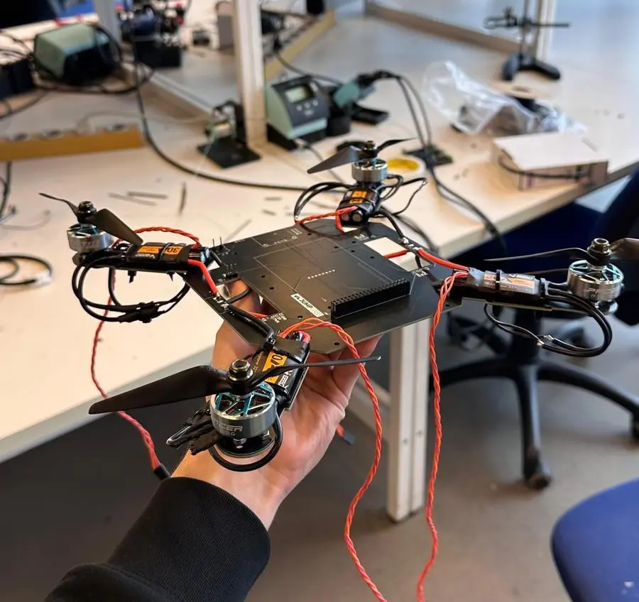
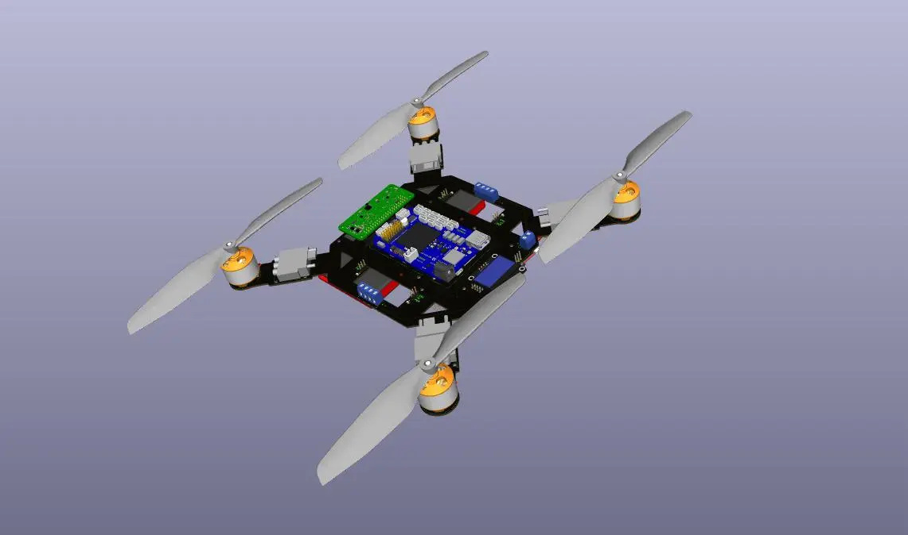
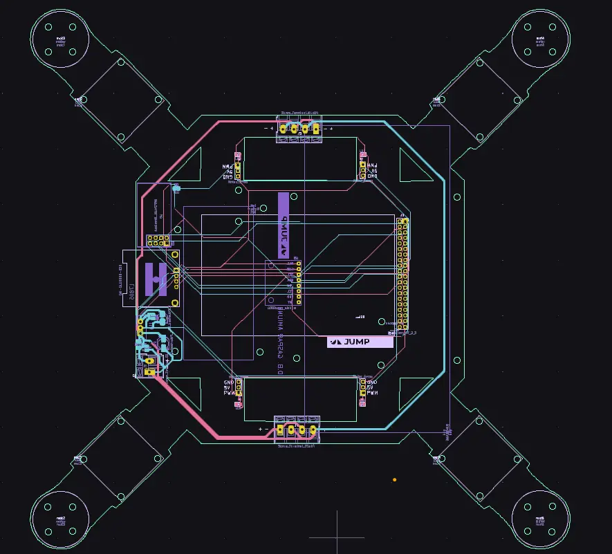
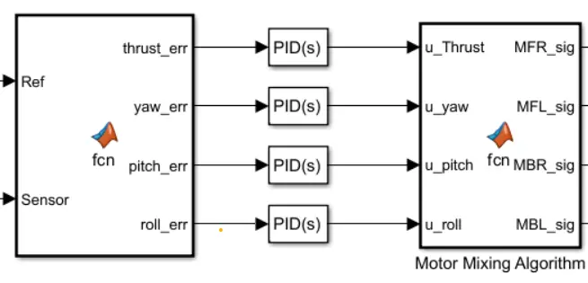
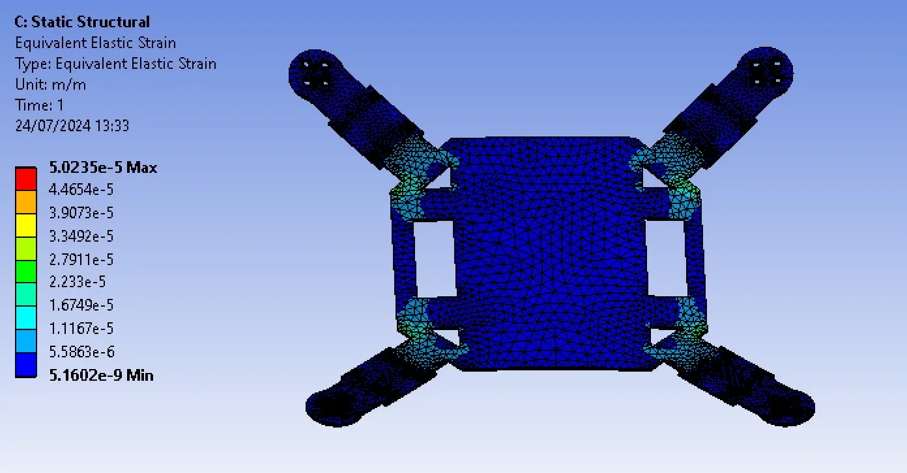
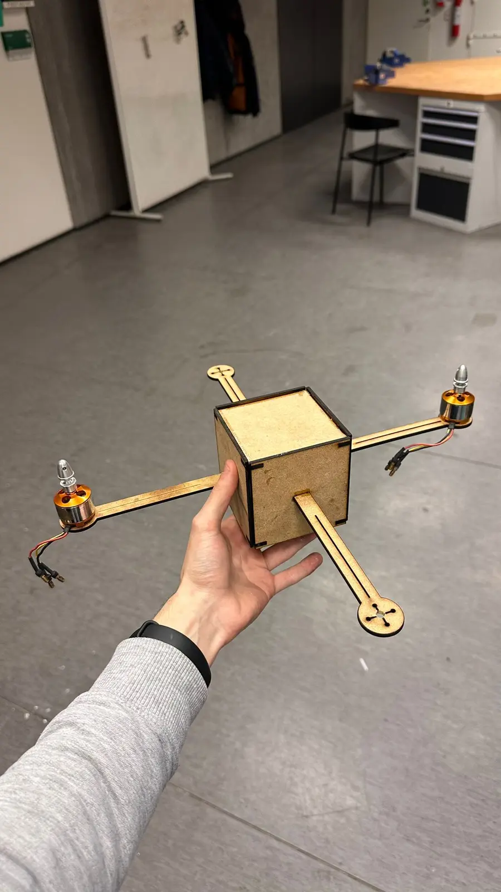

Flood surveillance drone
A quadcopter for flood surveillance: dynamics model, PID control in Simulink, a custom PCB and a built prototype.
Year2024
RoleElectronics and testing lead
TeamSemester project, team of six
StatusBuilt & tested
No public link: the code is private or the work is a report. The figures below are from the project itself.

01The project
A quadcopter concept for spotting people in flood zones. The team modelled the quadrotor dynamics, designed PID controllers in Simulink and built the drone around its frame and a custom PCB.
I was in charge of electronics and testing: the PCB, wiring and the bench tests that validated the motors, ESCs and sensors before flight.
02What I did
- Designed the electronics and PCB, and assembled the drone.
- Characterised the BLDC motors and ESCs on the bench against the manufacturer's data.
- Integrated the sensors with the control model and tested the full system.
03Under the hood
MATLAB / Simulinkquadrotor dynamics and PID attitude control with motor mixing.
KiCadthe PCB that carries power distribution and the sensors.
Ansysstatic check of the frame arms.
04Figures







